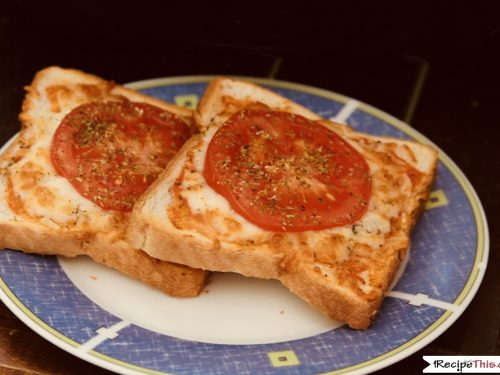

Wonder Bread Pizza

To call this pizza would be sacrilege, but it hits the spot when you're out of time and/or money.
Ingredients:
- A large slice of bread
- 2/3 cup shredded cheese (preferably not pre-shredded)
- 1 tbsp ketchup or tomato sauce
- Olive oil
- Optional: toppings (pepperoni, tomato, dried oregano)
Steps:
- Spread the ketchup or tomato sauce evenly on the bread
- Portion and spread the shredded cheese on the bread
- Add a light drizzle of olive oil on top of the cheese for better browning and taste
- Optional: add your toppings of choice. Dried oregano is highly recommended
- Pre-heat an air fryer or oven on 400ºF for 5 minutes
- Place pizza slice on air fryer or oven until the cheese bubbles
- Serve!